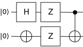

Getting started
Using Qristal
Quickstart
The fastest way to get a working Qristal installation is to run it directly from the provided Docker image.
To learn how to use Qristal, let’s run a simple Python example to create a Bell state.
The Bell state is the simplest example of a maximally entangled state, and comprises just 2 qubits. These 2 qubits contribute a Hilbert space of dimension 4. In the qubit basis \(\ket{0}\) and \(\ket{1}\), these four components are written as
A Bell state can be constructed through the application of simple gates such as the Hadamard, X, Z and CNOT gates. Each of the above components are created through their respective circuit:
Circuit to create \(\ket{\Phi^+}\):

Circuit to create \(\ket{\Phi^-}\):

Circuit to create \(\ket{\Psi^+}\):

Circuit to create \(\ket{\Psi^-}\): 
Now let’s code up the circuit to generate \(\ket{\Phi^+}\).
Import the Qristal core:
import qb.core
Create a quantum computing session using Qristal:
my_sim = qb.core.session()
Choose some default session parameters:
my_sim.qb12()
Set the number of shots to run through the circuit:
my_sim.sn = 1024
Set the number of qubits:
my_sim.qn = 2
Choose the simulator backend:
my_sim.acc = "qpp"
Create the \(\ket{\Phi^+}\) component of the Bell state using Hadamard and CNOT gates:
my_sim.instring = '''
__qpu__ void MY_QUANTUM_CIRCUIT(qreg q)
{
OPENQASM 2.0;
include "qelib1.inc";
creg c[2];
h q[0];
cx q[0], q[1];
measure q[0] -> c[0];
measure q[1] -> c[1];
}
'''
Run the circuit:
my_sim.run()
Print the cumulative results in each of the classical registers:
print(my_sim.out_raw[0][0])
Development guide
Qristal can either be run directly from the provided Docker image, or installed from source. This section provides instructions for working with the source. If using Windows Subsystem for Linux 2, ensure you have Docker Desktop installed on Windows and not under your Linux distribution, as it allows Docker to use WSL2 as a backend.
Dependencies
Installing Qristal from source requires the following libraries/packages to be installed:
GNU C++ Compiler >= 7.x
GNU Fortran Compiler >= 7.x
CMake >= 3.20
Python >= 3.8
Boost >= 1.71
Also, note that Qristal will be built with support for CUDA Quantum if and only if cmake detects that your system has a compatible CUDA Quantum installation. A shortcut is to run Qristal directly from the Docker image that we provide with a compatible version of CUDA Quantum already installed.
Additional dependencies that can be installed automatically at build time:
pybind11 >= 2.10
Eigen >= 3.3.7
cpr >= 1.3.0
args >= 6.4.1
cppitertools >= 2.1
GoogleTest >= 1.12.1
Nlohmann JSON >= 3.1.1
Various Python modules.
Note
Automatic dependency installation
It is highly recommended that users let the Qristal build system install the additional dependencies mentioned above, by setting the -DINSTALL_MISSING=ON CMake option.
Installation
For development purposes, it is recommended to install Qristal using automatic dependency installation mode.
git clone https://gitlab.com/qbau/software-and-apps/public/qbsdk.git qristal
cd qristal
mkdir build && cd build
cmake .. -DINSTALL_MISSING=ON
make install
The -DINSTALL_MISSING=ON flag ensures that all missing dependencies (if any) will be downloaded and installed automatically. To automatically download and install only C++ dependencies, instead set -DINSTALL_MISSING=CXX. To download and install only Python module dependencies, use -DINSTALL_MISSING=PYTHON.
Note
The required dependencies must be installed on your system. -DINSTALL_MISSING=ON will not handle those mandatory dependencies.
Note
MPI is enabled by adding the option -DENABLE_MPI=ON to the cmake command.
Manual Installation of additional dependencies (Advanced)
Follow the installation instructions of XACC, ExaTN and TNQVM.
Perform system-level installation of the remaining libraries.
Configure CMake build with
cmake .. -DXACC_DIR=<YOUR XACC INSTALLATION DIR> -DEXATN_DIR=<YOUR EXATN INSTALLATION DIR> -DTNQVM_DIR=<YOUR TNQVM INSTALLATION DIR>
Note
In this manual mode, the build system will check for a specific version of XACC, EXATN and TNQVM as provided. If not satisfied, it will terminate the build and ask for a reinstallation of the dependency. Please follow the error message to install the correct version (specified as a git commit hash key).
Contributing
There are many ways in which you can contribute to Qristal, whether by contributing some code or by engaging in discussions; we value contributions in all shapes and sizes!
Here are some ideas for how you can get involved.
Asking Questions
Have a question? Some concepts are hard-to-understand?
Please feel free to file an issue to ask your questions here.
Your question will serve as resource to others searching for help.
Reporting and/or Commenting on Issues
If you have feedback about Qristal, please let us know by filing a new issue!
When filing a bug report, please follow the below template:
# [Title]
A concise but specific description of the bug.
### Steps to reproduce
Describe what needs to be done to reproduce the faulty behavior.
### Resulting and expected behavior
A brief description of what you expected and what you actually got.
### Self help
If you found a workaround or tried to fix the bug yourself, please provide your attempt here.
### Technical output
If available, provide a traceback, logs or similar. Console output is helpful here.
### Screenshot
If applicable and helpful, provide a screenshot.
### System information and environment
- Software version:
- Operating system:
We also encourage you to look at the list of currently open issues to share your ideas and expertise.
Contributing Code
Before submitting a new merge request, please make sure the following is done:
New features should include a unit test. If you’ve fixed a bug or added code that should be tested, add a test to the
testsdirectory.Ensure that the test suite passes, e.g., by running
ctest. This will also be checked by our CI when the MR is submitted.
When ready, submit your fork as a merge request to the QB GitLab repository, filling out the merge request form.
When describing the merge request, please include as much detail as possible regarding the changes made/new features added/performance improvements. If including any bug fixes, mention the issue numbers associated with the bugs.
Once you have submitted the merge request, the CI pipeline will automatically run to ensure that all tests continue to pass.
We may ask for changes to a merge request if it requires more documentation or unit tests to better make use of it.
Last but not least, thank you for taking the time to contribute.